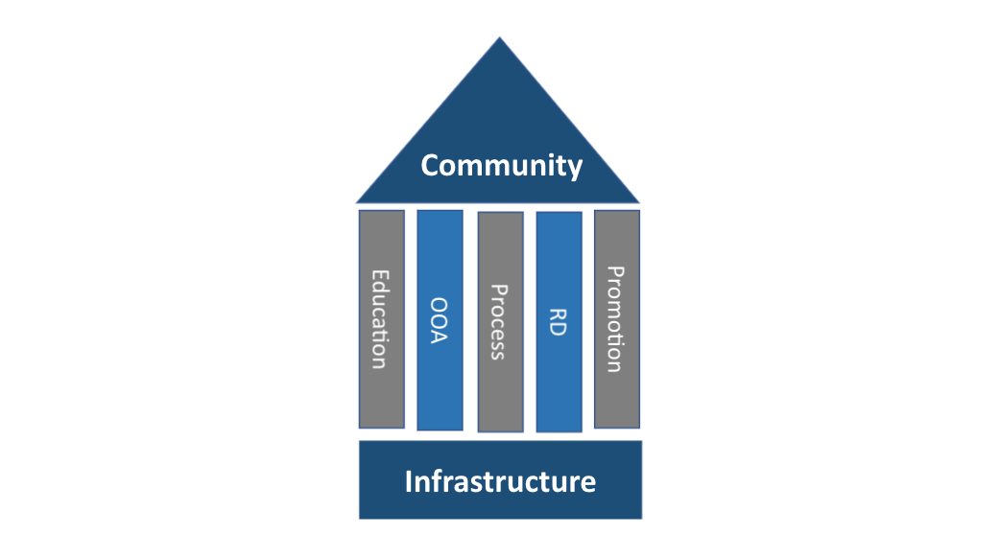

Welcome to the Shlaer-Mellor Commons information portal.

Figure 1. Shlaer-Mellor Commons
Read about the Shlaer-Mellor Commons Mission Statement.
Welcome to the Shlaer-Mellor Commons information portal.
Read about the Shlaer-Mellor Commons Mission Statement.